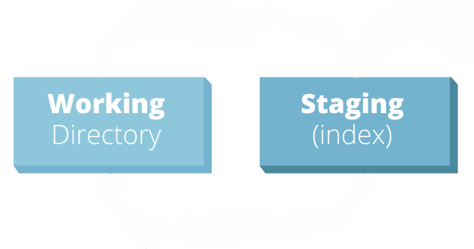
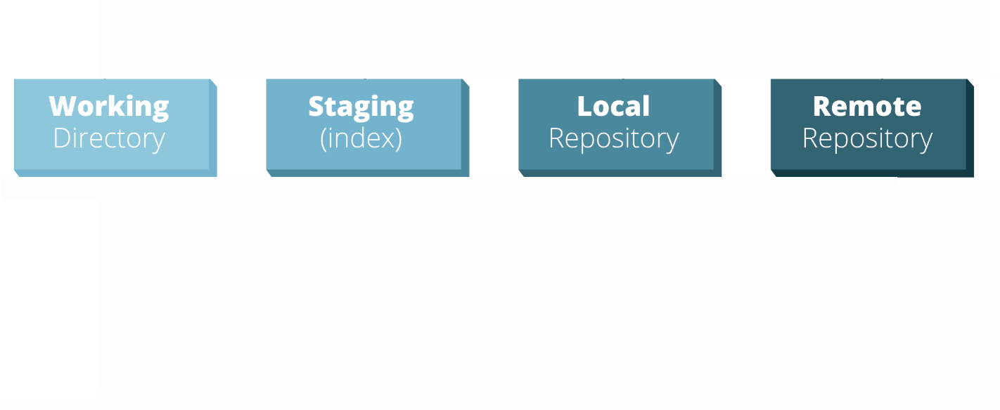
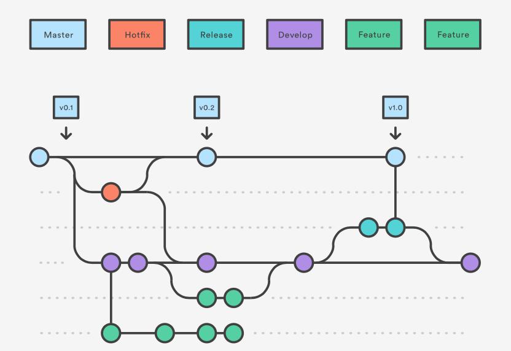
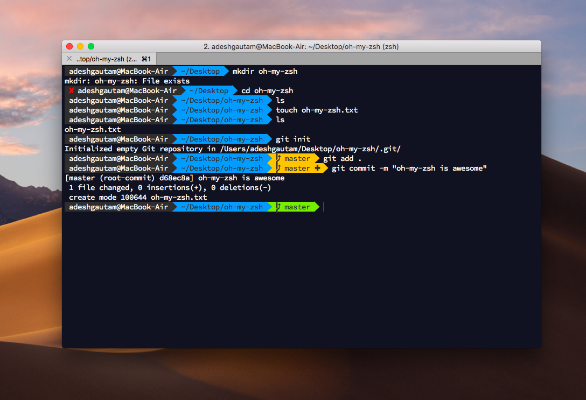

Git Presentation
for newbies and advanced usersWhat is Git (really) ? 🤔
Famous web-based remotes:

The Git logic
(where most people get lost)
Different "Spaces" managed by Git
Working Directory - Stage - Local Repository - Remote Repository
Stage
Git can interact with your files to create an Index of the overall changes
This index is called the Stage
You can add file changes to the Stage with
git add <file/directory>
And remove them with
git reset <nothing/directory>
When we reset without arguments, we revert to a previous commit (by default the HEAD)
Local repository
I talked about commits before, but what is that ?
A commit is a bundle of changes (the current Stage), to which is added a log message, an id, etc.
Commits reside in your Local Repository, which contains every commit ever added
You can move the current stage to the local repository with
git commit <nothing/-m 'message'>
And move your changes back from the local repository to the stage with
git reset <target commit SHA/commit path relative to HEAD>
Ok that's great, but what is that Github I keep hearing about ?
Github, Gitlab, Bitbucket, etc. are remotes, the 4th kind of Space
Your current Local Repository is linked to at least one Remote (origin), to which you can add a commit with
git push <remote> <branch>
You can also retrieve the state of the remote with
git fetch <--all for all tracked remotes>
And then apply change from the desired branch with
git merge <remote/branch>
The process of retrieving and applying changes seems tideous, any shorthand ?
YES
git pull <remote> <branch>
On the subject of branches
Git allows you to have multiple instances of a local repository, also called branches
This allows you to have multiple versions of a single project
You can create a branch with
git checkout -b <branchname>
Or access a branch with
git checkout <branchname>
Why bother about branches? Can't everybody just push their commits to master ?
We use GitFlow at Dynamicly
Every feature is a new branch
Completed features get reviewed, then merged to development
This allows us to manage released features, version tag master depending on the available features, make sure no side effects are caused before release, etc.
What did we learn today ?
Git allows you to manage 4 Spaces: Working Directory, Staging, Local Repository, Remote Repository
Repositories also have branches, which are kind of different versions
Everything is undoable and redoable with git, you have never "fucked up" the repo (unless you force push, but at that point you are looking for trouble). See: ohshitgit
That's it ! You are now git masters 😎
All this time spent in the terminal makes me hate myself, any tips ?
Use Iterm2 on MacOS
 For Windows I don't know guys, I haven't touched Windows in 5 yearsWow my terminal has a lot more features, but how can I make it EVEN BETTER ??
Use Zsh (better shell, with a lot of baked in features)
Install Oh-My-Zsh to add plugins and themes